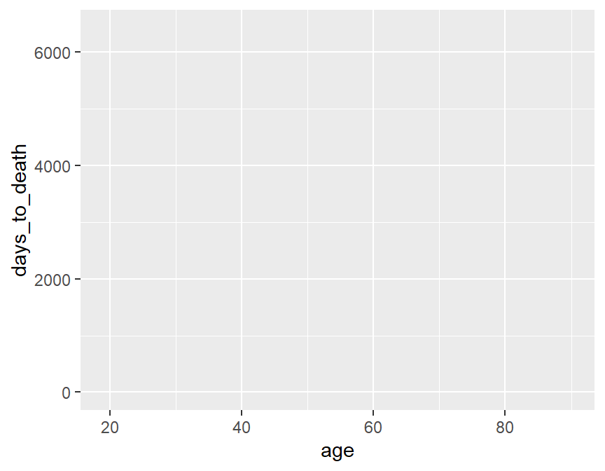
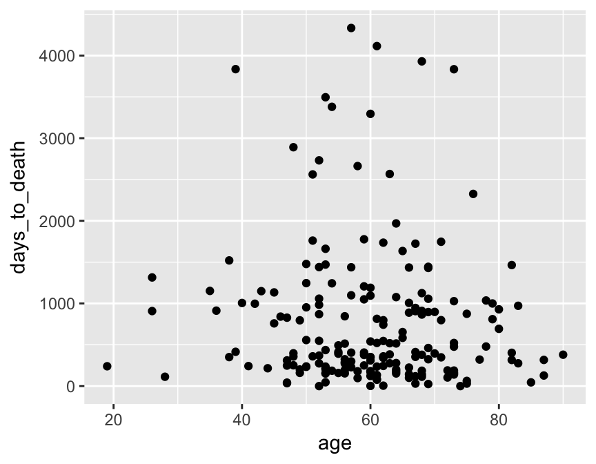
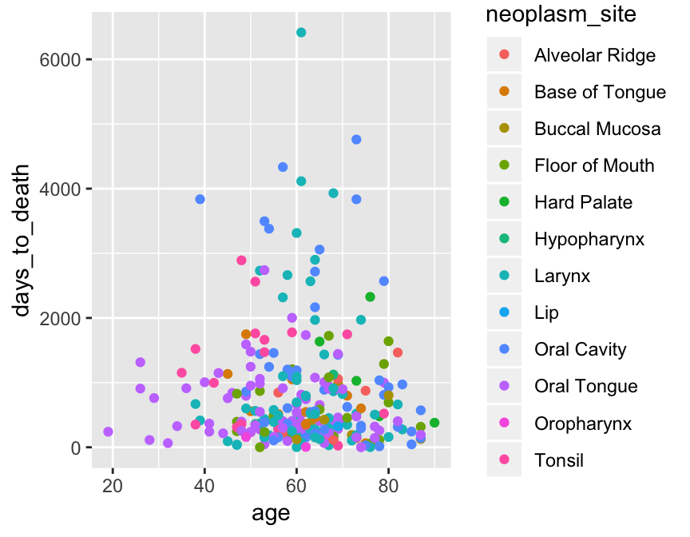
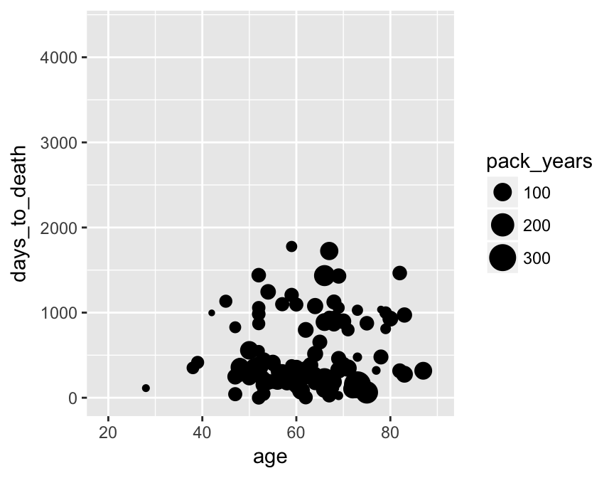
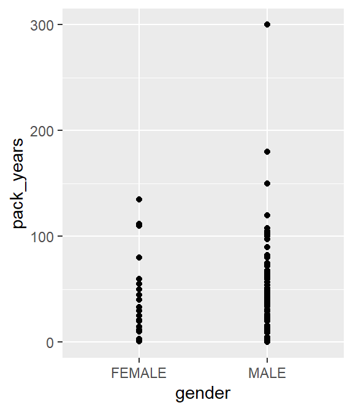
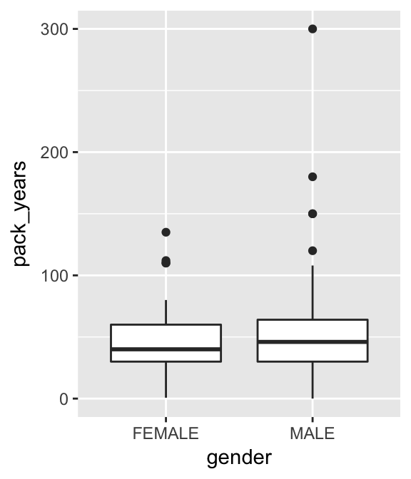
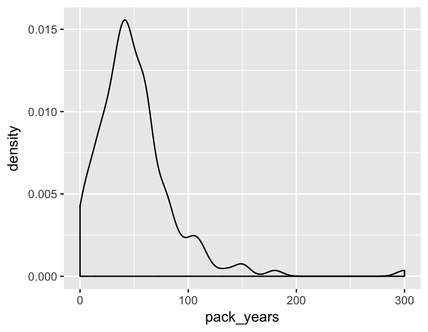
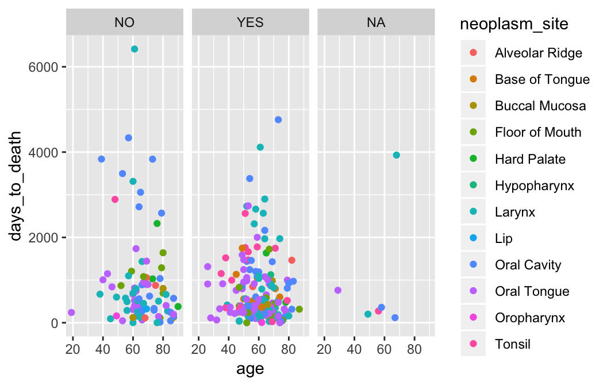

Angewandte Datenanalyse mit R
Tag 1 - Einführung in Programmierung mit R
Im ersten Teil des Praktikums, soll es uns darum gehen so schnell wie möglich in das Kerngeschäft von R einzusteigen - die Datenexploration.
Cheat-Sheet - Programmieren mit R
Objektypen

Subsetting von Objekten
# ersten beiden Einträge des Vektors
vector[1:2]
# ersten drei Spalten der Matrix
matrix[,1:3]
# 'age' Spalte des Dataframes
dataframe$ageR Packete
Installation
install.packages("tidyverse")Ins Environment laden
library(tidyverse)## ── Attaching packages ───────────────── tidyverse 1.2.1 ──## ✔ ggplot2 3.1.0 ✔ purrr 0.3.2
## ✔ tibble 2.1.1 ✔ dplyr 0.8.0.1
## ✔ tidyr 0.8.2 ✔ stringr 1.4.0
## ✔ readr 1.3.1 ✔ forcats 0.3.0## ── Conflicts ──────────────────── tidyverse_conflicts() ──
## ✖ dplyr::filter() masks stats::filter()
## ✖ dplyr::lag() masks stats::lag()Funktionen zur Exploration von Dataframes
Die Grundsyntax einer jeden Funktion ist
function(Objekt, Argumente)Die Argumente sind hierbei fakultativ.
#Die ersten 6 Zeilen des Dataframes anzeigen
head(dataframe)
# Tabelle von kategoriellen Daten
table(dataframe$column1)
# Tabelle von fehlenden Informationen
table(is.na(dataframe$column1))
# Summary von kontinuierlichen Daten
summary(dataframe$column1)Beispieldaten
Der Bespieldatensatz des Kurses sind Metadaten des The Cancer Genome Atlas (TCGA) zur Analyse von Kopf-Hals-Tumoren (head and neck squamous cell carcinoma; HNSCC). Der Datensatz fasst die wichtigsten klinisch-pathologischen Charakteristika der Studienkohorte (n=279) zusammen.
Für den Start möchten wir bewusst den Schritt überspringen, wie genau Daten in R geladen werden können und laden das Objekt mit folgendem Befehl:
load(url("http://andreasmock.github.io/data/hnscc.RData"))head(hnscc)## # A tibble: 6 x 11
## id age alcohol days_to_death gender neoplasm_site grade pack_years
## <chr> <int> <chr> <int> <chr> <chr> <chr> <dbl>
## 1 TCGA… 69 YES 461 MALE Oral Tongue G3 51
## 2 TCGA… 39 YES 415 MALE Larynx G2 30
## 3 TCGA… 45 YES 1134 FEMALE Base of Tong… G2 30
## 4 TCGA… 83 NO 276 MALE Larynx G2 75
## 5 TCGA… 47 YES 248 MALE Floor of Mou… G2 60
## 6 TCGA… 72 YES 190 MALE Buccal Mucosa G1 20
## # … with 3 more variables: tabacco_group <chr>, tumor_stage <chr>,
## # vital_status <chr>Übung 1
Nutzt die oben aufgeführten Funktionen um die Metadaten des Objekts hnscc zu explorieren:
- Wie viele Patienten trinken regelmäßig Alkohol?
- Was ist die häufigste Lokalisation der Tumoren?
- Bei wie vielen Patienten ist das Grading unbekannt?
- Was ist die maximale Anzahl von Packyears, die angegeben wurde?
- Wie viele Angaben fehlen in der Spalte “pack_years”?
- In welchem Bereich bewegte sich das Überleben der Patienten?
Appetizer - Visualisierung mit R
Visualisierungen mit dem ggplot2 Paket (Teil des tidyverse Pakets) sind neuer Standard in R.
Prinzip: Malen eines Gemähldes - Schicht für Schicht.
Metadaten des Bespieldatensatzes, die wir visualisieren können:
colnames(hnscc)## [1] "id" "age" "alcohol" "days_to_death"
## [5] "gender" "neoplasm_site" "grade" "pack_years"
## [9] "tabacco_group" "tumor_stage" "vital_status"Leere Leinwand. age auf der x-Achse und days_to_death auf der y-Achse.
ggplot(hnscc, aes(x=age, y=days_to_death))
Dotplot
ggplot(hnscc, aes(x=age, y=days_to_death)) +
geom_point()## Warning: Removed 1 rows containing missing values (geom_point).
Übung 2
In der zweiten Übungen des heutigen Tages gilt es spielerisch die folgenden Funktionen auszuführen. Bitte versucht ohne dass ihr die individuellen Funktionen kennt zu verstehen was passiert. Die Systematik des Plottens wird Hauptgegenstand des 2. Praktikumstages sein.
ggplot(hnscc, aes(x=age, y=days_to_death, color=neoplasm_site)) +
geom_point()## Warning: Removed 1 rows containing missing values (geom_point).
ggplot(hnscc, aes(x=age, y=days_to_death, size=pack_years)) +
geom_point()## Warning: Removed 126 rows containing missing values (geom_point).
Warum fehlen im Vergleich zum vorherigen Plot Datenpunkte?
ggplot(hnscc, aes(x=gender, y=pack_years)) +
geom_point() ## Warning: Removed 125 rows containing missing values (geom_point).
Warum ist dieser Plot wenig sinnvoll? Warum eignet sich der folgende Boxplot besser um die Verteilung der Daten zu verstehen?
ggplot(hnscc, aes(x=gender, y=pack_years)) +
geom_boxplot() ## Warning: Removed 125 rows containing non-finite values (stat_boxplot).
ggplot(hnscc, aes(x=pack_years)) +
geom_density() ## Warning: Removed 125 rows containing non-finite values (stat_density).
ggplot(hnscc, aes(x=age, y=days_to_death, color=neoplasm_site)) +
geom_point() +
facet_wrap(~alcohol)## Warning: Removed 1 rows containing missing values (geom_point).
Schon fertig?
Wer für heute mit den Übungen fertig ist darf die Zeit gerne nutzen, sich schon einmal die ganze Bandbreite der Visualierungen in R anzuschauen.
Guter Startpunkt: Das R Cookbook von Winston Chang (Link)